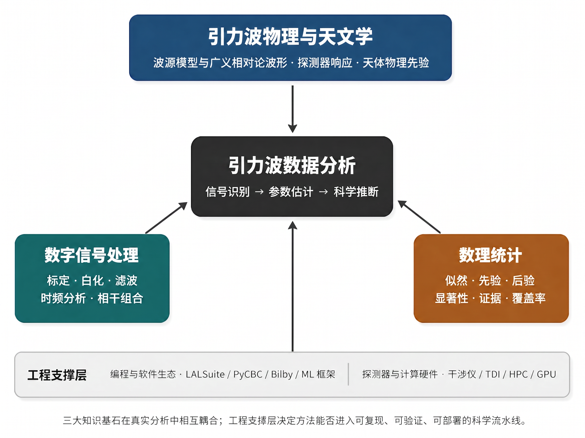

Chapter 1
绪论
1.1 引力波天文学的历史与发展
引力波的存在是爱因斯坦广义相对论的核心预言之一。1916年，爱因斯坦在建立广义相对论后不久便指出，质量的加速运动会在时空中激起涟漪，以光速向外传播——这便是引力波。然而，由于引力波与物质的耦合极其微弱，其直接探测在此后近一个世纪内都被认为是遥不可及的目标。
间接证据首先来自脉冲双星系统。1974年，Hulse 和 Taylor 发现了第一个脉冲双星 PSR B1913+16，随后数十年的轨道周期观测表明，该系统的轨道能量损失与广义相对论预言的引力波辐射高度吻合 [2]。这一发现使 Hulse 和 Taylor 获得了1993年的诺贝尔物理学奖，也坚定了物理学界直接探测引力波的信心。
Hulse-Taylor 脉冲双星的发现经过。 1974年11月，年仅24岁的博士研究生 Russell Hulse 在位于波多黎各的阿雷西博射电天文台执行一项系统性脉冲星巡天任务。他使用口径305米的球面射电望远镜，以1.4 GHz 频段对数百个天区进行重复扫描，目标是寻找射电脉冲星候选体并精确测定其脉冲周期。在当年7月至12月间，Hulse 共发现了40颗新脉冲星候选体，其中 PSR B1913+16 因一个异常现象引起了他的高度注意：该脉冲星的脉冲周期并非固定不变，而是以约7.75小时为周期做规律性振荡，振幅约为80微秒。这一周期性变化揭示了一个明确的物理机制——多普勒效应：PSR B1913+16 与一个看不见的伴星组成了一个绕转双星系统，脉冲星的周期性蓝移和红移对应其在轨道上朝向或背离地球的运动。
Hulse 将这一发现报告给其导师 Joseph Taylor，两人随即展开了系统性的后续观测。通过对脉冲到达时间（TOA，time of arrival）的精密测量，他们逐步重建出轨道参数：轨道周期约为7小时45分钟，轨道偏心率约为0.617（高度椭圆轨道），轨道半长轴约为1.95个太阳半径——这意味着整个双星系统可以装进我们太阳的半径之内。最重要的是，精确测定轨道参数后，广义相对论的广义后牛顿效应（施瓦西进动、时间膨胀、测地线进动）均可以得到精确检验。
从1974年到1982年，Taylor 团队持续积累 PSR B1913+16 的脉冲到达时间数据，时间跨度长达八年。在精密计时分析中，他们发现了一个关键现象：轨道周期以每年约76微秒的速率减小，即轨道在引力波辐射能量损失的驱动下缓慢衰减。将这一衰减速率与广义相对论对同等参数双星系统的预言相比较，两者吻合程度优于0.3%，误差范围内与理论完全一致。这是引力波存在的第一个间接实验证据，被誉为“人类第一次感知到引力波”。此后的持续观测进一步将符合精度提升至万分之一量级，成为精度最高的引力波间接探测结果之一。
直接探测的突破发生在2015年9月14日。美国激光干涉引力波天文台（LIGO）的两台探测器几乎同时记录到一个持续约0.2秒的信号，经过严格的数据分析，确认这是来自约13亿光年外两个黑洞并合产生的引力波事件 GW150914 [3]。这一发现不仅直接验证了广义相对论在强场动力学条件下的预言，更开创了引力波天文学这一全新的天文学分支，使 Weiss、Barish 和 Thorne 获得了2017年的诺贝尔物理学奖。Advanced LIGO 的建设 [4]和 Advanced Virgo 的加入 [5]，使三台探测器联合网络成为引力波天文学的核心基础设施。
LIGO 的建设历程。 激光干涉引力波天文台（LIGO）的诞生，是科学史上罕见的长期愿景与坚持不懈的典范。早在1972年，麻省理工学院（MIT）的 Rainer Weiss 就在一份内部报告中详细分析了激光干涉仪探测引力波的可行性，给出了主要噪声源的定量估计，奠定了现代引力波探测器的设计框架。1984年，Weiss、加州理工学院（Caltech）的 Kip Thorne 和 Ron Drever 正式向美国国家科学基金会（NSF）提交建设 LIGO 的方案，提出在两个地点分别建造臂长4公里的L型激光干涉仪，通过两台探测器的耦合（coincidence）分析来抑制局部噪声干扰。
1994年，LIGO 项目正式破土动工，选定路易斯安那州利文斯顿（Livingston）和华盛顿州汉福德（Hanford）两处地点。两个台址间距约3000公里，信号经过这一距离传播的时延约10毫秒，为耦合分析提供了重要约束。建设历时约六年，2002年，初代 LIGO（Initial LIGO，iLIGO）完成调试并正式开始科学运行，灵敏度在100 Hz 处达到约 \(10^{-21}/\sqrt {\text {Hz}}\) 量级。2005年至2010年间，iLIGO 完成了 S1 至 S6 共六轮科学运行，未发现引力波信号，但对各类波源给出了重要的上限约束，同时大量积累了关于探测器性能与噪声源的宝贵经验。
2010年至2015年，LIGO 经历了全面的升级改造，成为 Advanced LIGO（aLIGO）。这次升级的核心技术改进包括：激光功率从初代的10 W 提升至 200 W，臂腔功率通过功率循环腔达到约750 kW；引入信号循环腔（signal recycling cavity），允许对特定频率的引力波信号进行共振增强；将悬挂系统由金属丝改为熔融石英纤维（fused silica），大幅降低热噪声；引入全新的四级悬挂隔振系统（quad pendulum seismic isolation），将地震噪声在10 Hz 以上频段衰减超过十个量级；探测器应变灵敏度比 iLIGO 提升约十倍，在 100 Hz 处达到约 \(10^{-23}/\sqrt {\text {Hz}}\)，在 LIGO 引力波天文学中实现了从“上限”到“探测”的历史性跨越。2015年9月，完成升级后不久的 Advanced LIGO 正式开始第一轮科学运行（O1），随即在运行仅两天后便捕获了人类历史上第一个引力波信号 GW150914。
GW150914 的详细物理图像。 GW150914 是引力波天文学史上最重要的单一事件，其每一个观测细节都承载着深刻的物理意义。信号在北京时间2015年9月14日17时50分45秒（UTC 09:50:45）被 Hanford 和 Livingston 两台探测器先后探测到，两台探测器的触发时延约为7毫秒，与光速传播3000公里的时延（约10毫秒）一致，方向性约束指向南半球天区。
从信号形态看，GW150914 是一个典型的啁啾信号：频率从约35 Hz 单调增加到约150 Hz，历时约0.2秒，随后以极快速度达到峰值振幅，然后在约0.05秒内衰减为零。这一时频演化轨迹与双黑洞并合的旋进-并合-衰荡三阶段模型高度吻合。峰值应变约为 \(10^{-21}\)，对于 LIGO 4公里臂长而言，对应的实际臂长变化约为 \(4\times 10^{-18}\) 米，约为质子半径（\(\sim 10^{-15}\) m）的千分之四。Livingston 探测器的信噪比约为23.4，Hanford 探测器的信噪比约为13.0，两台探测器联合网络信噪比约为24.4。经过严格的背景估计和统计检验，GW150914 的显著性超过5.1\(\sigma \)，对应的误报率约为每20万年一次，以压倒性的统计证据确认了引力波的直接探测。
对波形的贝叶斯参数估计给出：啁啾质量 \(\mathcal {M} \approx 28.3^{+1.8}_{-1.5}\,M_\odot \)，两个黑洞的质量分别约为 \(36.2^{+5.2}_{-3.8}\,M_\odot \) 和 \(29.1^{+3.7}_{-4.4}\,M_\odot \)，并合后残余黑洞质量约为 \(62\,M_\odot \)，缺失的约 \(3\,M_\odot \) 以引力波的形式辐射。光度距离约为 \(410^{+160}_{-180}\) Mpc（约13亿光年），对应红移 \(z\approx 0.09\)。这是人类首次通过引力波直接观测到双黑洞并合，首次直接确认恒星级双黑洞系统的存在，并以直接实验方式检验了广义相对论在强场高速域的预言。
O1–O4 观测轮次的科学成果。 GW150914 的发现开启了引力波天文学的系统性观测时代。LIGO-Virgo-KAGRA 合作组此后相继完成了四轮科学观测，每一轮都带来了新的突破。第一轮观测（O1，2015年9月至2016年1月）历时约4个月，除 GW150914 外还探测到 GW151226（两个约14和8个太阳质量的黑洞并合）和 GW151012，共3个引力波事件候选体（其中GW150914和GW151226超过5\(\sigma \)显著性阈值，GW151012置信度稍低），初步确立了恒星级双黑洞并合的统计特征。
第二轮观测（O2，2016年11月至2017年8月）引入了欧洲 Virgo 探测器的加入，形成三台探测器的联合网络，显著提升了天空定位精度。O2 期间共探测到11个事件，最具里程碑意义的是2017年8月17日的双中子星并合事件 GW170817。该事件被引力波探测器、伽马射线望远镜（Fermi 和 INTEGRAL）、以及数十台光学、射电、X射线望远镜同步观测，是人类历史上首次实现的引力波与电磁波多信使联合观测，标志着多信使天文学新时代的正式开启。GW170817 距地球仅约40 Mpc，提供了迄今最精确的中子星参数约束，并独立测量了哈勃常数。
第三轮观测（O3，2019年4月至2020年3月）带来了引力波探测数量的大幅增加。O3 期间共探测到近百个引力波事件候选体，最终发布的 GWTC-3 引力波事件目录 [6]包含90个置信度不等的候选体，覆盖双黑洞（BBH）、双中子星（BNS）、黑洞-中子星（NSBH）等多种类型，以及若干处于“质量间隙”的神秘天体。O3 还首次探测到质量超过100个太阳质量的黑洞（中间质量黑洞）候选体 GW190521，引发了关于黑洞形成机制的广泛讨论。第四轮观测（O4）于2023年5月开始、2025年11月结束，O4a 目录已经显著扩展公开样本规模；随着 O4 后续数据产品的发布，引力波天文学正在从“单次发现”迈向“海量统计”的大数据时代。
1.1.1 激光干涉仪的工作原理
LIGO/Virgo/KAGRA 等地面引力波探测器的核心是迈克尔逊激光干涉仪。其基本原理是：当引力波通过时，时空的伸缩会导致干涉仪两臂的光程差发生变化，从而改变干涉条纹的亮度。对于臂长为 \(L\) 的干涉仪，引力波应变 \(h\) 引起的臂长变化为
对于 LIGO（\(L = 4\) km）和典型的引力波应变（\(h \sim 10^{-21}\)），臂长变化约为 \(\delta L \sim 10^{-18}\) m，约为质子半径（\(\sim 10^{-15}\) m）的千分之一量级。
为达到如此极端的测量精度，Advanced LIGO 采用了多项关键技术：功率循环腔（power recycling cavity）将激光功率从输入的约 200 W 提升至臂腔内的约 750 kW，增强光子散粒噪声的信噪比；信号循环腔（signal recycling cavity）对特定频率的引力波信号进行共振增强；法布里-珀罗臂腔（Fabry-Pérot arm cavity）使光束在臂中往返约 150 次，等效地将臂长增加至约 1200 km；以及主动隔振系统（active seismic isolation），将地震噪声在 10 Hz 以上频段衰减超过 10 个量级。
这些技术进步的背后是数十年的持续攻关。臂腔的精细度（finesse）约为450，对应光束在臂中平均往返约143次，使臂腔内循环光功率达到约750 kW，极大增强了光子数统计，将量子散粒噪声降低至约 \(4\times 10^{-24}/\sqrt {\text {Hz}}\)（在100 Hz 处）。信号循环腔的引入在技术上称为“共振边带提取”（resonant sideband extraction），它改变了信号带宽，使探测器对特定引力波频率的灵敏度得到显著增强，同时配合压缩光（squeezed light）注入技术，可将散粒噪声进一步降低3 dB（Advanced LIGO O3 已实现这一技术突破）。四级悬挂隔振系统的最底级采用熔融石英纤维支撑镜面，纤维的极低机械损耗将镜面热噪声降至最低水平，使100 Hz 频段的热噪声贡献不超过散粒噪声。
探测器的灵敏度受三类基本噪声限制：低频段（\(\lesssim 10\) Hz）由地震噪声和重力梯度噪声主导；中频段（约 10–200 Hz）由热噪声（悬挂系统和镜面涂层的布朗运动）主导；高频段（\(\gtrsim 200\) Hz）由量子散粒噪声（光子到达的泊松统计涨落）主导。这三类噪声的频率特性共同决定了探测器的灵敏度曲线 \(S_n(f)\)，也直接影响了匹配滤波和机器学习方法的设计选择。
重力梯度噪声（Gravity Gradient Noise / Newtonian Noise，GGN/NN）是地面引力波探测器低频灵敏度的根本性限制。地表附近的密度涨落——无论是地震波引起的地面形变还是大气压力变化——都会产生引力梯度，直接作用于检验质量，这一干扰无法通过机械隔振消除，只能通过在检验质量周围布置密集的传感器网络来测量并在线减除。正是这一根本性限制，促使下一代探测器（如爱因斯坦望远镜 ET 和日本的 KAGRA）选择建于地下，利用岩层的天然衰减将地震噪声降低两到三个量级。
1.1.2 引力波观测的科学贡献
在所有宇宙信使中，引力波最特殊的地方在于，它不依赖物质辐射的再加工，而是直接记录致密天体附近时空几何的动态变化。电磁波告诉我们物质如何发光，中微子告诉我们弱相互作用过程如何释放能量；引力波则把黑洞视界附近、致密星内部和宇宙早期的动力学过程转化为可测量的时空应变。它因此为现代天文学提供了一种前所未有的观测方式：我们不仅可以“看见”光与粒子，还可以“听见”引力如何在极端条件下传播、叠加并重塑时空。
这种信使的独特性，使引力波观测天然连接了现代科学大厦中的若干“乌云”级问题。强场引力是否严格遵从广义相对论？黑洞是否完全由质量、电荷和自旋刻画？恒星级黑洞的质量谱为什么具有峰值和间隙？中子星内部的冷致密核物质状态方程究竟如何？哈勃张力是否暗示系统误差之外的新物理？宇宙早期相变、宇宙弦或暗物质环境是否在随机引力波背景中留下痕迹？这些问题分属基础物理、天体物理、核物理和宇宙学，但都可以通过引力波观测获得独立约束。
基础物理：引力波波形直接编码强场、高速和强非线性条件下的引力动力学。双黑洞并合的旋近、并合和衰荡阶段分别检验后牛顿动力学、强场非线性相互作用和黑洞准简正模；多信使事件中引力波与电磁信号的到达时延可约束引力波传播速度；高信噪比事件还可用于限制引力子质量、洛伦兹不变性破缺和广义相对论之外的极化模式。
致密天体物理：引力波事件目录（GWTC-3）揭示了双黑洞质量分布的复杂结构，发现了质量间隙（\(\sim 3\)–\(5\,M_\odot \)）中的候选天体，以及超出传统恒星演化预期的高质量黑洞（如 \(\sim 85\,M_\odot \) 成分） [6]。这些观测对恒星演化、公共包层过程、动力学俘获、多代并合和致密星团环境提出了新的约束，使黑洞种群从理论假设转变为可统计检验的观测对象。
多信使天文学与核物理：GW170817 的多信使观测表明，双中子星并合不仅会产生引力波，还会伴随短伽马射线暴、千新星、X 射线与射电辐射 [7]。这一事件把引力波天文学推进到“引力波+电磁波”协同观测的新阶段，并从观测上连接了并合源、重元素 r 过程核合成与短伽马射线暴之间的因果链条。引力波相位中的潮汐形变率还把中子星状态方程问题推进到天体尺度，为极端密度下核物质的半径、可压缩性和最大质量提供了独特约束。
宇宙学：引力波事件提供了不依赖传统距离阶梯的“标准汽笛”距离测量。GW170817 已经给出哈勃常数的独立约束；随着双中子星事件、黑洞-中子星事件和“暗汽笛”统计样本的增长，引力波有望在哈勃张力、宇宙膨胀史和引力理论的宇宙学尺度检验中发挥越来越重要的作用 [8]。未来空间探测器还将把观测窗口延伸到大质量黑洞并合和随机背景，为早期宇宙相变、宇宙弦和暗物质相关模型提供新的观测入口。
1.2 国际与国内探测计划概览
当前运行的地面引力波探测器构成了一个全球网络。美国的 Advanced LIGO 拥有两台探测器（Hanford 和 Livingston），臂长 4 公里，灵敏频段约 10 Hz–几千 Hz。欧洲的 Advanced Virgo 位于意大利，臂长 3 公里。日本的 KAGRA 是首台建于地下的低温引力波探测器，旨在进一步降低热噪声。印度的 LIGO-India 正在建设中，将进一步提升全球网络的天空定位能力。2024年，中国科学院大学正式加入 LIGO 科学合作组织（LSC），成为 LSC 在中国大陆地区的成员单位之一，标志着中国地面引力波研究与国际顶级合作网络的深度融合。
地面探测器受限于地球尺度和地震噪声，灵敏频段通常在 10 Hz 以上，无法探测更低频率的引力波源。为此，多个空间引力波探测计划正在推进，它们共同把观测窗口延伸到毫赫兹频段：
LISA（Laser Interferometer Space Antenna）：欧洲航天局主导，三颗卫星组成等边三角形星座，臂长 250 万公里，目标工作频段主要面向毫赫兹窗口，预计2030年代发射 [9]。
太极（Taiji）：中国科学院主导，三颗卫星，臂长 300 万公里，与 LISA 频段相近，预计2030年代发射 [10–12]。
天琴（TianQin）：中山大学主导，三颗卫星绕地球运行，臂长约 17 万公里，灵敏度窗口同样面向毫赫兹附近的空间探测窗口，但峰值灵敏区域较 LISA/太极偏高，预计2030年代发射 [13, 14]。
三个空间任务的联合观测将显著提升参数估计精度和天空定位能力，是未来空间引力波天文学的重要发展方向 [15]。
1.2.1 下一代地面探测器
当前的 Advanced LIGO/Virgo/KAGRA 网络代表了第二代地面引力波探测器的技术水平，其灵敏度在未来数年内仍有提升空间（A+ 和 AdV+ 升级计划），但根本性的突破将来自第三代探测器。
爱因斯坦望远镜（Einstein Telescope，ET）是欧洲提出的下一代地面引力波探测器 [16]，其设计理念在多个维度超越了现有技术。ET 采用等边三角形构型，三条臂各长10公里，三角形构型相比L型具有天然的优势：三个探测器通道可以通过线性组合分离引力波的两种极化分量，提供更完整的极化信息，同时三角形的几何结构使得全天空覆盖更均匀。ET 将建于地下约100至200米深处，利用岩层对地震噪声的天然衰减，突破地面探测器低频灵敏度的根本限制。在技术上，ET 计划采用低温镜面、高功率激光和频率相关量子压缩等技术，以同时降低热噪声和量子噪声。其设计目标是在约2–3 Hz 以上扩展地面探测器的低频观测能力，并在数十至数百 Hz 频段相对 Advanced LIGO 提升约一个量级的应变灵敏度。这将使 ET 能够探测高红移双黑洞并合事件，并显著提升对双中子星早期旋近、超新星核坍缩以及随机引力波背景的观测能力。
宇宙探索者（Cosmic Explorer，CE）是美国提出的下一代地面引力波探测器计划 [17]，其核心思路是通过大幅增加臂长来提升灵敏度。CE 采用标准L型构型，臂长约40公里（是 Advanced LIGO 的10倍），这意味着在相同的应变灵敏度下，臂长变化的绝对量增加10倍，从而使探测信噪比大幅提升。CE 预计将建于地面，但通过超低噪声隔振系统和先进的量子技术，在5 Hz 至10 Hz 以上频段实现突破性灵敏度。CE 与 ET 的联合网络（“下一代网络”）将能够对宇宙学距离上的引力波事件进行完整的参数估计，并在有利事件上显著改善天空定位、距离和质量测量精度。这将使引力波成为精密宇宙学的重要标准汽笛工具，并为哈勃张力等问题提供独立观测约束；具体精度仍取决于事件样本、探测器网络配置和系统误差控制。
1.2.2 空间引力波探测器的技术原理
空间引力波探测器与地面探测器在工作原理上有本质相同之处——均基于激光干涉测量两个自由浮动检验质量之间距离的微小变化——但面临的技术挑战和实现方式存在根本差异。
LISA（Laser Interferometer Space Antenna）是由欧洲航天局（ESA）主导的空间引力波探测任务，其技术方案历经三十余年的演进。LISA 由三颗卫星构成等边三角形星座，边长250万公里，绕太阳运行，与地球保持约 \(20°\) 的夹角，轨道倾角约 \(60°\)，使得星座平面相对黄道倾斜，以实现全天空扫描。每颗卫星内部包含两个检验质量（金铂合金立方体，边长约4.6厘米），悬浮于超高真空腔室中，通过微推进器主动维持无拖拽飞行（drag-free flight）——即卫星外壳精确跟随检验质量的自由落体轨迹，消除太阳风压力和太阳辐射压力等非引力干扰。LISA 的激光波长为1064 nm，激光功率约2 W，经过望远镜（口径约30 cm）发射后，到达250万公里外的另一颗卫星时功率约降至 pW 量级，因此 LISA 采用的不是传统的反射干涉，而是“转发”方案：接收方卫星用本地激光器进行外差干涉，再将相位信息发回。LISA 的位移噪声目标为约 \(1\,\text {pm}/\sqrt {\text {Hz}}\)（频率在 3 mHz 处），加速度噪声目标为约 \(3 \times 10^{-15}\,\text {m/s}^2/\sqrt {\text {Hz}}\)（低频处），这些指标已由2015至2017年在轨运行的 LISA Pathfinder 任务成功验证，其实测性能甚至超越了设计指标一个量级。
太极（Taiji）是中国科学院主导的空间引力波探测任务，在设计上与 LISA 高度相似但有若干差异。太极的臂长为300万公里，略长于 LISA，这使其在中低频段（约 \(1\,\text {mHz}\)）的灵敏度略优于 LISA。太极的三颗卫星质量约为550公斤，激光功率2 W，望远镜口径300毫米，位移噪声目标 \(1\,\text {pm}/\sqrt {\text {Hz}}\)，加速度噪声目标 \(3 \times 10^{-15}\,\text {m/s}^2/\sqrt {\text {Hz}}\)。太极的轨道设计与 LISA 不同，采用绕太阳的日心轨道，与地球保持约 \(20°\) 夹角，星座平面相对黄道倾角约为 \(18°\)，这一差异使太极与 LISA 具有不同的天空灵敏度分布，因此两者的联合观测将大幅提升天空定位能力。太极计划分三步走：太极-1（2019年发射）用于在轨技术验证；太极-2为单星验证；太极-3（预计2030年代）为三星正式科学任务。
天琴（TianQin）是中山大学主导的空间引力波探测任务，其轨道设计与 LISA/太极有根本性差异。天琴采用绕地球的高轨道，三颗卫星位于距地约10万公里的近圆轨道，臂长约17万公里，轨道平面垂直于指向白矮星双星系统 RX J0806.3+1527（天琴的“参考源”）的方向。这一设计的优点是轨道较低、通讯时延短，且与地面站的联系更紧密；缺点是臂长较短（比 LISA 短约14倍），因此峰值灵敏度更偏向毫赫兹窗口的高频端，对超大质量黑洞并合信号的覆盖略弱于 LISA/太极，但对部分银河系双星、恒星质量双黑洞早期旋近以及中等质量黑洞相关信号仍然具有重要科学价值。天琴的科学目标还包括验证弱等效原理（精度达 \(10^{-8}\)）和精密测量地球引力场，体现了科学目标的多元性。
三个空间任务的科学合作愿景已有明确的技术论证。LISA-太极联合网络（LISA + Taiji）由于两者轨道平面之间存在夹角，联合观测可将 MBHB 的天空定位精度从单任务的约 \(10\,\text {deg}^2\) 提升至约 \(0.1\,\text {deg}^2\)，这对于引力波与电磁对应体的关联搜索至关重要。LISA-太极-天琴三星网络进一步增加了基线，理论上可将某些 EMRI 事件的参数测量精度再提升一到两个量级。这种多任务协同观测的范式，也对数据分析方法提出了全新需求：如何从多个独立数据流中联合提取信号、处理相关噪声、以及在全局拟合框架下同时优化多个探测器的参数推断，是本书后续章节方法研究的重要动机之一。
1.3 引力波数据分析的任务层次与挑战
引力波物理学家伯纳德·舒尔茨（Bernard Schutz）曾系统归纳成功观测引力波的五条关键要素：（1）良好的探测器技术；（2）良好的波形模板；（3）良好的数据分析方法和技术；（4）多个独立探测器间的一致性观测；（5）引力波天文学和电磁波天文学的一致性观测。这五条要素不仅描述了探测成功的条件，也定义了引力波数据分析研究的核心使命。其中要素（2）至（4）尤其强调数据本身及其分析方法的重要性：波形模板决定“要在数据中寻找什么”，分析技术决定“如何从噪声中提取证据”，多探测器一致性观测则决定“候选信号是否能经受独立数据流的交叉检验”。这三者共同构成本书研究主线中最直接的方法论基础。
引力波数据分析的核心任务可以分为三个层次：
信号搜索与探测：从探测器输出的含噪数据中判断是否存在引力波信号，并确定信号的大致时间和参数范围。这是数据分析链条的第一步，要求在保持高探测率的同时将误报率控制在可接受水平。
参数估计：对已探测到的信号，推断引力波源的物理参数（质量、自旋、距离、天空位置等）的后验概率分布。这是提取引力波天文学科学价值的核心步骤，要求在高维参数空间中进行精确的贝叶斯推断。
这三个层次的任务在科学目标和技术挑战上密切关联，但在方法论上各有侧重。信号搜索追求高灵敏度（最大化探测率）和低误报率（最小化假阳性），是一个统计检验问题，以奈曼-皮尔逊最优性为理论基础；参数估计追求后验分布的精确性和完整性（正确量化不确定度），是一个贝叶斯推断问题，以贝叶斯定理为理论基础；天体物理与宇宙学推断追求对种群统计规律的无偏提取，是一个层次贝叶斯问题，需要对探测选择效应（detection selection effects）进行显式修正。三个层次的相互衔接——搜索给参数估计提供输入，参数估计给宇宙学推断提供输入——构成了引力波数据分析管道的整体结构。AI方法在这三个层次上分别有不同的作用：在搜索层次，AI方法加速触发生成并提升glitch鉴别能力；在参数估计层次，SBI方法压缩推断时间；在宇宙学推断层次，深度学习的表征学习能力有助于捕捉种群参数的复杂依赖关系。
天体物理与宇宙学推断：基于引力波事件的统计样本，推断致密天体的形成与演化、宇宙学参数（如哈勃常数）、以及基础物理（广义相对论检验、暗物质约束等）。
这三个层次的任务面临共同的挑战：引力波信号极其微弱（地面探测器的应变灵敏度约为 \(10^{-23}\)），淹没在比信号强数个量级的噪声中；探测器噪声具有非高斯、非平稳的复杂特性；参数空间维度高（双黑洞系统约 15 维，EMRI 系统约 17 维），且存在强参数简并；空间引力波探测器还面临数百万个信号同时叠加的全局拟合挑战 [12]。
1.3.1 信号搜索的具体挑战
引力波信号搜索的核心困难在于极端的信噪比条件与复杂的噪声环境的叠加。在地面探测器中，典型的引力波应变约为 \(10^{-23}\)，而量子散粒噪声在100 Hz 处约为 \(2\times 10^{-24}/\sqrt {\text {Hz}}\)，对于持续约1秒的信号，有效信噪比约为10。这意味着信号功率仅为噪声功率的约百分之一，在时域波形上几乎完全不可见，必须依赖匹配滤波等相干积分方法才能从噪声中提取。
然而，真实探测器的噪声远比理想的高斯白噪声复杂。非高斯暂态噪声（glitch）是信号搜索中误报率的主要来源。在 Advanced LIGO 的典型运行状态下，每小时约有数个至数十个 glitch 事件，其中部分 glitch 的幅度可比背景噪声高出一到两个量级，持续时间从毫秒到数秒不等，形态多样。常见的 glitch 类型包括：持续时间约数毫秒、频率约100至300 Hz 的“blip”型 glitch（来源不明，可能与镜面散射光有关）；持续时间约数秒、频率从低到高扫描的“scattered light”型 glitch（来自散射光的干涉）；以及“koi fish”型、“tomte”型等数十种已命名的 glitch 类型。这些 glitch 在时频图上的形态有时与真实的引力波信号高度相似，是区分真实信号与噪声伪迹的核心挑战。
非平稳性是另一个根本性挑战。探测器的灵敏度随时间缓慢变化，在特定时段（如地震活动增强、激光功率波动、环境温度变化）会出现突发性的灵敏度下降。这种非平稳性导致基于固定噪声模型的统计方法失效：如果噪声功率谱在分析时段内发生了显著变化，基于旧噪声模型计算的信噪比将出现系统性偏差，导致误报率升高或探测率下降。实际的搜索流水线（如 PyCBC 和 GstLAL）需要实时估计和追踪噪声功率谱，通常采用滑动时间窗口的方法，但这引入了对非平稳性的时间尺度假设，在快速变化的噪声环境中仍然面临挑战。
参数空间的高维度使穷举搜索不可行。对于双黑洞系统，完整的参数空间包括两个天体的质量（2维）、自旋矢量（6维）、轨道倾角（2维）、天空位置（2维）、距离（1维）、并合时刻（1维）和初始相位（1维），共约15维。在匹配滤波框架下，需要构建足够密集的模板库，使得任意真实信号与最近模板之间的匹配度（fitting factor，FF）不低于约0.97。实际搜索通常通过解析极大化、参数降维和分区模板库设计来避免直接覆盖完整15维空间；即便如此，非自旋或对齐自旋双黑洞模板库也可达到 \(10^4\) 至 \(10^6\) 量级，若显式覆盖强进动和高阶模式效应，模板数量会进一步迅速膨胀。对于 EMRI 系统，参数空间约17维，且精确波形计算耗时，传统模板库方法难以直接承担，这正是机器学习方法在 EMRI 搜索与参数估计中具有重要价值的根本原因。
1.3.2 参数估计的科学意义
引力波参数估计不仅是数据分析的技术任务，更是提取引力波天文学科学价值的核心环节。精确的参数测量在多个科学方向上具有不可替代的意义。
在致密天体物理方面，精确的质量测量是约束黑洞形成机制和演化路径的关键。GWTC-3 中的双黑洞质量分布揭示了若干重要特征：在约 \(10\,M_\odot \) 处存在一个质量峰，可能对应恒星演化中的特定质量损失机制；在约 \(35\,M_\odot \) 处存在另一个峰，可能与对不稳定脉冲超新星（pulsational pair-instability supernova）有关；在约 \(3\,M_\odot \) 至 \(5\,M_\odot \) 的“质量间隙”中存在若干候选体，其起源（是中子星还是黑洞？）对核物理和超新星机制有重要约束。自旋参数的测量则可以区分黑洞的起源：孤立双星演化产生的黑洞自旋通常与轨道角动量对齐（有效自旋参数 \(\chi _\text {eff} > 0\)），而动力学俘获（如在球状星团中）产生的双黑洞自旋方向随机，\(\chi _\text {eff}\) 的分布更宽且对称于零。
在宇宙学方面，引力波事件提供了独立于传统距离阶梯的哈勃常数测量方法。引力波信号的振幅直接给出光度距离，而无需任何标准烛光的校准；结合电磁对应体（如 GW170817 的宿主星系 NGC 4993）提供的红移，可以直接测量哈勃常数。这一方法被称为“标准汽笛”（standard siren），其精度随引力波事件数量、宿主星系关联质量和系统误差控制水平的提升而改善，有望为判断哈勃张力的来源提供独立信息。
在广义相对论检验方面，引力波波形的精确参数估计提供了强场动力学条件下的广义相对论检验。后牛顿参数的测量可以约束广义相对论的高阶修正项；衰荡阶段的准简正模频率和衰减时间可以检验“黑洞无毛定理”（即黑洞完全由质量和自旋描述）；引力波传播速度的测量（通过多信使时延）可以约束引力子质量和洛伦兹不变性破缺。这些检验的精度随信噪比的提升而改善，下一代探测器将把广义相对论检验的精度提升数个量级。
引力波参数估计的科学价值还体现在核物理方向。双中子星并合事件（BNS）的并合后动力学携带了关于中子星物质的信息：中子星的潮汐形变率（tidal deformability）\(\Lambda \) 对引力波信号相位的贡献在并合前最后几个轨道周期内显著增大，通过精确测量 \(\Lambda \) 可以约束中子星状态方程（equation of state，EOS）——即极端密度下核物质的压力-密度关系。GW170817 对 \(\Lambda \) 的测量已经排除了一部分极硬状态方程，并将典型中子星半径约束到十余公里量级，是中子星内部物质性质研究的重要约束之一。中子星半径的精确测量——从引力波（潮汐形变）和 X 射线（热辐射）两个独立方向获得的约束的综合——将是多信使天文学最重要的科学产出之一，而高精度的 AI 参数估计方法（特别是 SBI 对包含物质效应的 BNS 波形的快速处理）是实现这一目标的关键使能技术。
天体物理与宇宙学推断层次的数据分析——从多个引力波事件的参数后验分布推断种群统计规律——代表了引力波天文学最高层次的科学目标，也对方法论提出了最高的要求。当引力波事件数量从当前的约90个增加到未来的约1000个（O5 期间预期）乃至 \(10^5\) 个（爱因斯坦望远镜运行期间预期），传统的“逐事件参数估计→统计汇总”的两步方法将面临严重的计算瓶颈，而且逐步积累的系统误差也会在统计汇总中放大。面向未来的种群推断方法需要能够同时处理探测选择效应（detection selection bias——信噪比高的事件更容易被探测到，导致样本偏差）和参数估计不确定度的传播，这对于贝叶斯层次分析的效率和准确性提出了很高要求。SBI 方法的多事件联合推断能力（第6章）将在这一层次发挥核心作用，使天体物理种群分析能够实时响应不断增加的观测数据，成为引力波天文学走向“大数据科学”的关键使能技术。
空间引力波探测器面临的数据分析挑战在量级上远超地面探测器，其核心困难在于“全局拟合”问题。在 LISA/太极的灵敏频段内，同时存在的引力波信号数量可达数百万个：银河系内约有 \(10^7\) 至 \(10^8\) 个双白矮星系统，其中约 \(10^4\) 至 \(10^5\) 个在 LISA 频段内可分辨，其余形成不可分辨的混叠背景（confusion noise）；此外还有数十个 EMRI 事件、数个 MBHB 并合事件、以及随机引力波背景。这些信号在频域上高度重叠，无法逐一独立分析，必须在统一的框架下同时拟合所有信号和噪声参数，这就是“全局拟合”问题。
全局拟合的参数空间维度极高：每个可分辨的双白矮星有约7个参数，\(10^4\) 个可分辨源对应约 \(7\times 10^4\) 维参数空间；每个 EMRI 有约17个参数；MBHB 有约15个参数；加上噪声参数和前景模型参数，总有效维度可达 \(10^5\) 至 \(10^7\) 量级，具体取决于任务时长、可分辨源数量和建模精度。传统的 MCMC 方法若直接作用于完整联合空间，收敛时间可能长到难以满足任务需求。这一挑战是本书第10章的核心主题，也是 AI 方法在空间引力波数据分析中具有重要价值的根本动机：机器学习方法（特别是模拟推断和深度生成模型）有望把全局拟合中的若干子问题从年级或月级计算压缩到天级乃至更短时间，从而使空间引力波天文学的准实时迭代分析更接近可行。
1.3.3 数据分析的三层挑战：从信号识别到全局拟合
上述三个任务层次——信号搜索、参数估计、天体物理推断——在方法论上构成递进关系，但每一层都面临独特的计算瓶颈，且这些瓶颈随探测器灵敏度的提升而急剧恶化。将三层挑战并置审视，有助于理解为何 AI 方法不是对传统方法的局部改良，而是整个数据分析范式的系统性重构。
第一层：信号识别。在噪声中检测引力波信号的存在，本质上是一个假设检验问题：在零假设（纯噪声）与备择假设（信号加噪声）之间做出判断。匹配滤波是奈曼-皮尔逊最优检验统计量，其信噪比定义为
其中 \((a|b) = 4\,\text {Re}\int _0^\infty \tilde {a}(f)\tilde {b}^*(f)/S_n(f)\,\mathrm {d}f\) 为噪声加权内积，\(S_n(f)\) 为单边功率谱密度。匹配滤波的最优性依赖于两个前提：噪声为平稳高斯过程，且信号波形精确已知。在实际应用中，这两个前提均不严格成立，但匹配滤波仍是地面探测器信号搜索的核心工具。
匹配滤波的根本计算瓶颈在于模板库的规模。为覆盖参数空间中所有可能的信号，需要构建一个足够密集的模板网格，使得任意真实信号与最近模板的匹配度（fitting factor，FF）不低于约0.97。模板数量随参数空间维度和波形复杂度增加而快速增长：对于非自旋或对齐自旋双黑洞系统，模板库通常已达 \(10^4\)–\(10^6\) 量级；若显式覆盖强进动、自旋高维结构或 EMRI 长时信号，直接模板库策略会遇到极高试验因子和计算代价。即便在当前双黑洞搜索中，大量模板与长时数据段的重复匹配滤波也会消耗可观计算资源。
机器学习方法在信号识别层次的核心优势在于推断速度。经过训练的卷积神经网络（CNN）或 Transformer 模型可以在毫秒量级内完成对一段数据的分类，而无需显式构建模板库。2021年举办的机器学习引力波搜索挑战赛（MLGWSC-1）对多种 AI 方法与传统匹配滤波流水线进行了系统性比较，结果表明：在相同误报率条件下，最优的机器学习方法的探测灵敏度约为传统方法的70%，即存在约30%的性能差距 [18]。这一差距揭示了当前 AI 方法在信号识别层次的局限性，也指明了未来改进的方向：如何在保持毫秒级推断速度的同时，将探测灵敏度提升至与匹配滤波相当的水平，是第5章的核心问题之一。
第二层：参数估计。推断引力波源物理参数的后验概率分布 \(p(\boldsymbol {\theta }|d)\)，是贝叶斯推断问题：
其中似然函数 \(p(d|\boldsymbol {\theta }) \propto \exp \!\left [-\frac {1}{2}(d - h(\boldsymbol {\theta })|d - h(\boldsymbol {\theta }))\right ]\)，\(p(\boldsymbol {\theta })\) 为先验分布。由于似然函数的计算需要生成波形 \(h(\boldsymbol {\theta })\)，而后验分布在高维参数空间中具有复杂的多峰结构，传统的马尔可夫链蒙特卡洛（MCMC）方法需要对似然函数进行大量评估（通常为 \(10^6\) 至 \(10^8\) 次），每次评估需要生成一个波形（约毫秒至秒量级），导致单个事件的参数估计耗时从数小时（双黑洞）到数月（EMRI）不等。
模拟推断（SBI）方法通过训练神经网络直接近似后验分布，将推断时间从小时量级压缩至秒量级，实现了约 \(10^6\) 倍的加速 [19]。这一加速的代价是训练阶段的一次性计算投入（通常需要数天至数周的 GPU 计算），以及对波形模型的隐式依赖（训练数据的质量决定了推断精度的上限）。精度与速度的权衡是 SBI 方法的核心设计问题：如何在保证后验分布精度（特别是尾部行为和参数简并结构）的同时最大化推断速度，是第6章的核心主题。
第三层：全局拟合。空间引力波探测器的数据分析面临前两层挑战的叠加，并引入了本质上更困难的多源联合分析问题。在 LISA/太极的灵敏频段内，数万个可分辨信号在频域上高度重叠，无法逐一独立分析。全局拟合要求在约 \(10^7\) 维的联合参数空间中同时推断所有信号和噪声参数，这一规模使得任何基于逐点似然评估的方法（包括 MCMC 和嵌套采样）在计算上不可行。
当前最有前景的策略是迭代减除（iterative subtraction）：先识别并拟合最强的信号，将其从数据中减除，再对残差数据重复上述过程，直至所有可分辨信号均被提取。这一策略的关键挑战在于误差传播：早期步骤的参数估计误差会在减除过程中积累，影响后续步骤的精度。AI 方法在全局拟合中的角色不再是对传统方法的加速替代，而是作为必要的基础设施：深度生成模型可以高效地近似高维联合后验分布，强化学习可以优化迭代减除的策略，而神经网络波形模型可以将 EMRI 等计算密集型波形的生成速度提升数个量级，使全局拟合在任务期内（约4至10年）完成成为可能。
三层挑战的共同主线是：随着探测器灵敏度和事件率的提升，传统方法的计算代价以超线性方式增长，而 AI 方法的推断代价（训练完成后）几乎与事件数量无关。这一根本性的计算经济学差异，是本书系统性引入 AI 方法的核心动机。
1.3.4 计算资源与科学产出的矛盾：规模化挑战
引力波天文学正在经历从“稀有事件天文学”向“大数据天文学”的范式转变。这一转变的驱动力是探测器灵敏度的持续提升和探测网络的扩展，其结果是引力波事件率、数据量和分析复杂度的同步指数增长，而现有的计算基础设施和分析方法论尚未为这一转变做好充分准备。
事件率的快速增长。LVK 第一次观测运行（O1，2015–2016年）探测到约3个引力波事件；第三次观测运行（O3，2019–2020年）发布了90个置信度不等的候选体；O4 进一步增加了公开候选样本，并把引力波天文学推向大样本统计阶段。下一代地面探测器爱因斯坦望远镜（ET）和宇宙探索者（CE）的灵敏度将比当前探测器提升约一个量级，预期年探测率可能达到 \(10^4\)–\(10^5\) 量级，具体数值取决于天体物理事件率、探测网络配置和分析阈值。
这一事件率的增长对数据分析流水线提出了根本性挑战。在 O3 期间，单个引力波事件的参数估计通常需要数小时至数天，并依赖大量 CPU 核并行计算。若将相同的逐事件精密采样流程直接推广到 ET/CE 时代的大样本目录，计算需求将随事件数近似线性增长，并迅速超过常规人工逐事件分析模式能够承受的范围。自动化、高速的 AI 参数估计方法因此成为缓解这一瓶颈的关键技术路线之一。
数据量与数据复杂度的增长。地面探测器不仅记录主引力波应变通道，还持续记录大量辅助通道、环境监测通道和数据质量信息；用于公开科学分析的应变数据通常已经过筛选、标定和降采样，但低延迟管道仍需同时处理数据质量、噪声谱估计和候选触发背景。太极和 LISA 的主科学数据采样率较低，数据体量本身未必大于地面探测器；真正的困难在于多源叠加、时变响应、TDI 处理和全局拟合，使每单位数据所需的推断计算量显著增加。
实时处理的计算需求是另一个关键约束。引力波触发的多信使天文学要求在信号到达后数秒至数分钟内完成初步参数估计，以便及时通知电磁望远镜进行后随观测。当前的低延迟参数估计流水线（如 BAYESTAR）通过简化的分析方法实现了约1分钟的延迟，但其精度有限，特别是对天空定位的不确定度较大。AI 方法（特别是基于归一化流的 SBI）可以在保持与完整贝叶斯分析相当精度的同时，将延迟压缩至秒量级，这对于多信使天文学的科学产出具有直接影响。
多信使天文学的时效性要求。GW170817 是迄今唯一有明确电磁对应体的引力波事件。低延迟流水线和 BAYESTAR 能在分钟量级完成候选识别与快速天空定位计算；但由于当时需要处理数据质量问题并完成人工审核，首个公开 GCN 警报在并合后约40分钟发布，全球约70个天文台随后开展后随观测，最终在并合后约11小时发现光学对应体 AT2017gfo。这一成功案例揭示了时效性对多信使天文学的决定性作用：若天空定位延迟超过数小时，千新星的早期光学辐射将显著衰减，后随观测的科学收益会明显下降。
未来双中子星并合事件的多信使观测面临更高的时效性要求。在 ET/CE 时代，双中子星系统可能在并合前较长时间内进入地面探测器的可探测频段，理论上可以在并合发生之前完成参数估计并发出预警，使电磁望远镜提前指向目标天区，捕捉并合瞬间的电磁辐射（如伽马射线暴的提示辐射）。实现并合前预警的关键技术要求是：在信号持续积累的过程中，实时更新参数估计，并在并合前数分钟至数十分钟内给出足够精确的天空定位。传统的 MCMC 方法难以满足这一实时性要求，而经过训练的 AI 推断模型可以在毫秒至秒量级内完成参数估计更新，是实现并合前预警的重要技术路线之一。
计算资源的现实约束。LIGO 科学合作组织（LSC）的数据分析每年消耗约 \(10^8\) 核时的计算资源，分布在全球多个计算中心（包括 LIGO 数据网格 LDG 和开放科学网格 OSG）。这一计算规模已接近当前天文学领域单个项目的计算资源上限，且随着 O4/O5 事件率的提升，计算需求将进一步增加。
AI 方法在计算经济学上具有根本性优势：训练代价是一次性的（通常为数天至数周的 GPU 计算，约 \(10^4\) 至 \(10^5\) GPU 时），而推断代价极低（每个事件约毫秒至秒量级，约 \(10^{-3}\) GPU 时）。对于 \(10^5\) 个/年的事件率，AI 方法的年均推断计算量约为 \(10^2\) GPU 时，而传统 MCMC 方法的年均计算量约为 \(10^{10}\) 核时（假设每事件约 \(10^5\) 核时）。即使考虑到 GPU 与 CPU 的效率差异（约 \(10^2\) 至 \(10^3\) 倍），AI 方法的计算经济性优势仍达约 \(10^5\) 倍量级。这一经济性分析表明，在 ET/CE 时代，AI 方法不仅是提升分析速度的工具，更是使大规模引力波天文学在计算上可行的必要条件。
计算资源约束与科学产出需求之间的矛盾，是推动引力波数据分析方法论变革的根本动力。本书的核心论点之一是：AI 方法不是对传统方法的渐进式改良，而是应对规模化挑战的范式转变——从“为每个事件定制分析”到“训练一次、推断百万次”的计算模式转变，将使引力波天文学在下一代探测器时代保持科学产出的可持续性。
1.4 本书的研究主题、目标与创新点
本书聚焦于引力波数据分析方法论的系统性创新，以人工智能与统计推断的交叉融合为主线，覆盖从信号识别到参数估计、从地面探测到空间任务、从单一方法到自动算法发现的完整技术谱系。
研究主题：如何将机器学习、深度学习、生成模型、大语言模型等 AI 方法系统性地应用于引力波数据分析，在保持物理可解释性的同时实现计算效率的量级提升。
理解这一主题，需要把引力波数据分析放在三大知识基石的交叉处：引力波物理与天文学决定信号模型和科学问题，数字信号处理决定原始时间序列如何转化为可计算特征，数理统计决定候选事件、参数后验和模型比较如何被可靠解释。三者之下还需要软件生态、计算硬件和探测器工程的支撑，才能形成可复现、可验证、可部署的科学流水线。

核心创新点包括以下五个方面：
其一，物理驱动的网络设计：感知层 CNN 将匹配滤波的物理先验以归纳偏置的形式嵌入网络结构（第5章），先验知识采样策略将物理先验转化为训练数据分布设计（第6章），两者共同构成“物理-数据融合”的早期实践。这一创新的核心洞察在于：引力波信号的物理特征（啁啾频率演化、特征时频轨迹、极化模式）可以通过网络结构设计而非仅靠数据学习来编码，从而在有限训练样本下实现更好的泛化性能，并赋予网络决策过程以物理可解释性。具体而言，MF-CNN 的感知层卷积核被初始化为匹配滤波模板的形状，使网络在训练初期就具备了物理意义明确的特征提取能力，而非从随机初始化出发盲目学习。
其二，空间引力波参数估计的系统性突破：归一化流和连续归一化流方法在太极任务的大质量双黑洞和极端质量比旋入参数估计中，实现比传统 MCMC 方法快几个数量级的推断速度（第6章），其中 EMRI 17 维参数空间的机器学习参数估计探索具有里程碑意义。传统的 MCMC 方法（如 Nested Sampling）对单个 EMRI 事件的参数估计需要大量波形计算，每次高保真波形计算可能耗时较长，总计算时间可达月级。归一化流方法通过一次性训练，将后验分布的采样时间压缩至秒级乃至更短时间尺度。这一加速不仅使低延迟参数估计成为可能，更为空间引力波全局拟合中的迭代优化提供了可行的计算基础。
其三，Transformer 架构的引力波去噪：WaveFormer 将自注意力机制引入引力波信号去噪，克服 CNN 的长程依赖局限（第7章）；针对空间探测器非稳态噪声的鲁棒去噪方法，为真实探测管道的构建提供了方法论基础。引力波信号的旋进阶段持续时间可达数分钟至数小时（对于低质量系统），信号的早期部分（低频、低振幅）与晚期部分（高频、高振幅）之间存在强烈的长程相关性——早期的频率演化速率决定了晚期的并合时刻，这种全局相关性是 CNN 等局部感受野方法难以有效捕捉的。Transformer 的自注意力机制天然适合处理这种长程依赖，WaveFormer 的实验结果表明，在相同参数量下，Transformer 架构的去噪性能显著优于 CNN，尤其在低信噪比条件下优势更为明显。
其四，LLM 驱动的可解释算法自动发现：Evo-MCTS 框架将大语言模型、蒙特卡洛树搜索与进化计算三者有机整合，在 MLGWSC-1 基准上超越强挑战赛基线 20.2%，同时保持算法的物理可解释性（第8章）。这是 LLM 驱动的自动算法发现在引力波检测任务中的系统性实践。传统的神经架构搜索（NAS）和超参数优化方法通常将算法视为黑箱，优化目标是性能指标，而不关心算法的物理意义。Evo-MCTS 的创新在于：利用 LLM 的代码生成能力在算法空间中进行有意义的探索（而非随机变异），利用蒙特卡洛树搜索在算法演化树中进行有效的规划，利用进化计算维持算法多样性并避免局部最优。最终发现的算法不仅性能优越，而且其每一步操作都有明确的物理解释，可以被领域专家理解和验证。
其五，方法论的跨领域普适性：SBI 方法从引力波参数估计迁移到 21cm 森林宇宙学观测（第11章），beyond-GR 信号探测展示了 AI 作为理论无关探测器的潜力（第11章），共同指向 AI 方法在天文学中的更广泛应用前景。21cm 森林是高红移宇宙中性氢对背景射电源的吸收特征，其功率谱携带了宇宙再电离历史和暗物质性质的信息，但正向模拟极为耗时，传统的 MCMC 参数估计面临与引力波 EMRI 类似的计算瓶颈。将 SBI 方法迁移到这一领域，不仅解决了具体的计算问题，更验证了 SBI 作为通用推断框架的跨领域适用性，为 AI 方法在更广泛的天文学问题中的应用提供了方法论范本。
本书的组织结构遵循“问题驱动、方法递进、应用验证”的逻辑：第一、二部分建立理论基础和传统方法的参照系，第三、四部分系统介绍 AI 新方法及其与物理的融合，第五部分面向未来空间任务和发展趋势。每章均以具体的科学问题为起点，以定量的实验结果为支撑，以与全书论点的关联为收尾，形成完整的逻辑闭环。
表 1.1列出了与本书主题密切相关、作者参与完成的代表性研究工作。这些研究均依托具体合作团队开展，其中既包括作者主导或共同主导的工作，也包括作者作为合作者参与推进的重要成果；表中所称”贡献”指相关论文或项目对本书方法论主线的贡献，而非表示所有工作均为作者单独完成。
| 研究工作 | 核心贡献 | 对应章节 | 参考文献 |
| MF-CNN | 物理先验嵌入CNN，较早在真实LIGO-Virgo数据中系统应用 | 第5章 | [20] |
| 先验知识采样 | 物理先验引导的归一化流训练策略 | 第6章 | [21] |
| 太极归一化流 | 太极MBHB参数估计，处理时变响应函数 | 第6章 | [22] |
| CNF-MBHB | 流匹配CNF用于太极MBHB参数估计 | 第6章 | [23] |
| CNF-EMRI | ML方法用于EMRI 17维参数估计探索 | 第6章 | [24] |
| CVAE混合推断 | CVAE+贝叶斯精确协同，压缩至14%时间 | 第6章 | [25] |
| SBI综述 | SBI方法在引力波数据分析中的系统综述 | 第6章 | [26] |
| WaveFormer | Transformer架构引力波去噪 | 第7章 | [27] |
| 长时序列去噪 | 30天旋近信号去噪与并合时刻预测 | 第7章 | [28] |
| 鲁棒去噪 | 非稳态噪声鲁棒深度学习去噪 | 第7章 | [29] |
| Evo-MCTS | LLM驱动自动算法发现，超越MLGWSC-1基线 | 第8章 | [30] |
| G-LNS | LLM引导大邻域搜索 | 第8章 | [31] |
| Beyond-GR | AI作为理论无关引力波探测器 | 第11章 | [32] |
| 21cm SBI | SBI方法迁移至21cm森林宇宙学推断 | 第11章 | [33] |
| 太极挑战综述 | 太极数据分析挑战与AI方法综述 | 第10章 | [12] |
说明：本表仅用于说明这些合作研究与本书各章论述之间的对应关系。表中工作包含多位合作者和合作团队的共同贡献，具体作者排序、贡献分工和资助背景以相应论文原文为准。
1.5 本书章节安排
本书共分五个部分、十二章，各章内容安排如下。
第一部：理论基础与背景（第1–2章）
第1章（绪论）系统梳理引力波天文学的历史脉络与探测现状，介绍地面和空间引力波探测器的技术特点与科学目标，分析数据分析面临的三层挑战（信号识别、参数估计、全局拟合），并概述本书的研究主题与五项核心创新点。
第2章（引力波信号与噪声建模）建立全书的物理与数学基础，系统介绍引力波波形模型（后牛顿近似、啁啾质量、SPA频域表示）、多类型引力波源的信号特征、探测器噪声的统计性质（功率谱密度、非高斯暂态、非平稳漂移），以及数据预处理的标准流程。
第二部：传统方法与局限（第3–4章）
第3章（经典的引力波数据分析方法）系统介绍匹配滤波与模板库构建、PyCBC/GstLAL 实际搜索流水线、贝叶斯推断与参数估计框架，以及蒙特卡洛采样方法的原理与实践挑战，并通过 MLGWSC-1 评测结果客观定位经典方法的性能边界。
第4章（高维参数空间与多模态挑战）从维度灾难、多源信号重叠、非平稳噪声三个维度定量分析经典方法在面向空间引力波探测器时的可扩展性瓶颈，为后续各章 AI 方法的引入提供清晰的问题动机。
第三部：人工智能新方法（第5–7章）
第5章（机器学习在引力波信号识别中的应用）以 MF-CNN 为核心，系统介绍卷积神经网络在引力波信号识别中的应用进展，包括感知层物理先验嵌入、集成学习、空间引力波多源统一检测、CNN 超参数调优、beyond-GR 信号探测，以及多角度可解释性分析。
第6章（生成模型与模拟推断）系统介绍模拟推断（SBI）的理论框架与主要变体（NPE/NRE/NLE），展示归一化流、连续归一化流（CNF）和混合推断策略在大质量双黑洞、极端质量比旋入参数估计中的系统应用，以及 SBI 方法向 21cm 森林宇宙学观测的跨领域迁移。
第7章（智能化信号分离与去噪）介绍 WaveFormer（Transformer 架构去噪）、长时旋近去噪与并合时刻预测、以及空间探测器非稳态噪声下的鲁棒信号提取，直接连接多信使天文学的实际预警需求。
第四部：综合创新与融合（第8–9章）
第8章（智能化启发式搜索与优化方法）介绍 LLM 驱动的自动算法发现方法演进（FunSearch→EoH→ReEvo→Evo-MCTS），重点展示 Evo-MCTS 在 MLGWSC-1 基准上超越强基线 20.2% 的系统性验证，以及领域知识集成与可解释算法路径的关键作用。
第9章（物理驱动与数据驱动的融合方法）从互补缺陷分析出发，系统梳理物理先验嵌入、混合推断（精确协同）、可解释性验证三条融合路径，提出“精确协同”而非“近似替代”的方法论范式。
第五部：前沿挑战与展望（第10–12章）
第10章（未来空间引力波探测任务的数据挑战）以太极任务为主线，系统分析全局拟合的终极挑战、AI 方法在各类源分析中的分层角色、非稳态噪声的系统性处理，以及高保真仿真与真实探测管道的构建要素。
第11章（智能化引力波天文学的发展趋势）从四个维度展望 AI 在科学研究中角色的转变：LLM 驱动的自动算法发现、SBI 方法的跨领域迁移、AI 作为理论无关探测器，以及持续智能监测与人机协作的未来形态。
第12章（结语）以三条方法论主线（黑箱→可解释、近似替代→精确协同、单一方法→自动发现）总结全书贡献，并指出空间引力波全局拟合可行化、SBI 精度保证框架、AI 驱动科学发现泛化边界三个核心开放问题。
引力波天文学的独特地位在于，它是少数几个同时满足“物理理论极为精确”（广义相对论提供精确波形预言）和“信号检测极为困难”（应变灵敏度约\(10^{-23}\)）的科学领域，这一组合使它成为检验数据分析方法论的理想试验场：任何声称“有效”的方法都必须在极端噪声条件下通过严格的统计检验；任何声称“物理一致”的AI方法都可以通过对比理论预言来客观验证。这种近乎苛刻的科学标准，是引力波数据分析方法论研究的独特价值——在这里产生的方法论创新，往往具有超越引力波领域本身的普适性，因为它们是在最严格的科学标准下锻造出来的。
本书各章的内容组织遵循“从已知到未知、从经典到前沿、从单一到融合”的认知递进逻辑。第一部建立物理基础（读者需要的物理背景），第二部分析经典方法的能力与局限（为什么需要AI方法），第三部系统介绍AI新方法（怎么用AI方法），第四部展示融合与创新（怎么做到更好），第五部展望未来（下一步往哪里走）。这一逻辑链条不是线性阅读的约束，而是理解全书方法论体系的骨架。读者可以根据自己的知识背景选择合适的入口，但理解每章内容与整体框架的关联，是获得本书最大价值的关键。
本书在线开源版本已公开发布，欢迎在线阅读与交流：
在线版与本书同步，支持全文检索和章节导航，并开放读者评论与勘误提交。
1.6 本章小结
本章从引力波天文学的历史脉络出发，系统梳理了从爱因斯坦1916年的理论预言到2015年 GW150914 首次直接探测的百年历程。Hulse-Taylor 脉冲双星 PSR B1913+16 的发现与轨道周期衰减的精密测量，提供了引力波存在的第一个间接证据，其与广义相对论预言的符合精度优于0.3%，坚定了物理学界直接探测引力波的信心。LIGO 从1984年的构想到2002年初代运行、再到2015年 Advanced LIGO 的历史性突破，是科学史上长期愿景与技术攻关的典范。GW150914 的每一个观测细节——35至150 Hz 的啁啾频率演化、\(10^{-21}\) 的峰值应变、7毫秒的两台探测器时延、5.1\(\sigma \) 的统计显著性——都承载着深刻的物理意义，标志着引力波天文学新时代的开启。O1–O3 已公开近百个引力波候选事件，O4 进一步扩展样本规模；从 GW170817 的多信使天文学到 GW190521 的中间质量黑洞候选体，引力波天文学正在从“单次发现”迈向“海量统计”的大数据时代。
在探测器技术方面，Advanced LIGO 的臂腔（精细度约450，臂腔功率约750 kW）、信号循环腔、四级悬挂隔振系统和量子压缩光技术代表了当代精密测量的最高水平。下一代地面探测器（ET 的10公里三角形地下构型、CE 的40公里L型构型）将把灵敏度再提升一个量级，实现宇宙学距离上的引力波天文学。空间探测器（LISA、太极、天琴）将把探测窗口延伸至毫赫兹频段，探测超大质量黑洞并合、EMRI 和银河系双白矮星，三个任务的联合观测将大幅提升天空定位精度和参数估计精度。
在数据分析挑战方面，信号搜索面临极弱应变信号（典型量级 \(\sim 10^{-23}\)）、非高斯 glitch（每小时数个至数十个）、非平稳噪声和高维参数空间（BBH 约15维，EMRI 约17维）的四重挑战；参数估计的科学价值体现在质量分布约束黑洞形成机制、自旋测量区分起源、距离测量给出哈勃常数等多个维度；空间引力波全局拟合的有效参数维度可达 \(10^5\) 至 \(10^7\) 量级，直接 MCMC 方法难以满足任务时效要求，是 AI 方法具有重要价值的根本动机。
本书的五项核心创新——MF-CNN 物理先验嵌入、SBI 参数估计加速、WaveFormer 智能去噪、Evo-MCTS 自动算法发现、物理-数据精确协同——均在这一问题框架下提出，构成了全书的方法论主线。理解这一框架，是把握后续各章具体方法动机的前提。
引力波天文学发展到今天，已经成为一门高度交叉的学科，其数据分析方法论的演进涉及广义相对论与天体物理学（物理建模）、统计学与贝叶斯推断（方法论基础）、信号处理与滤波（数据预处理）、机器学习与人工智能（方法革新）、以及高性能计算与软件工程（基础设施）。本书定位于方法论层面的系统梳理，不要求读者在所有五个方向都有深厚背景，但希望通过清晰的问题陈述和方法动机说明，帮助不同背景的读者在自己最熟悉的维度上理解本书的方法论贡献。对物理学家而言，重点是理解为何特定的物理先验对AI方法有决定性价值；对数学/统计学家而言，重点是理解引力波推断问题的特殊结构如何催生了SBI等新的推断范式；对计算机科学家而言，重点是理解科学约束如何重新定义了算法设计的目标和评估标准；对工程师而言，重点是理解从研究原型到生产系统的关键工程挑战。正是这种多维度的交叉融合，使引力波数据分析方法论成为科学AI方法论发展的最佳“试验场”之一。